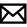
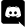
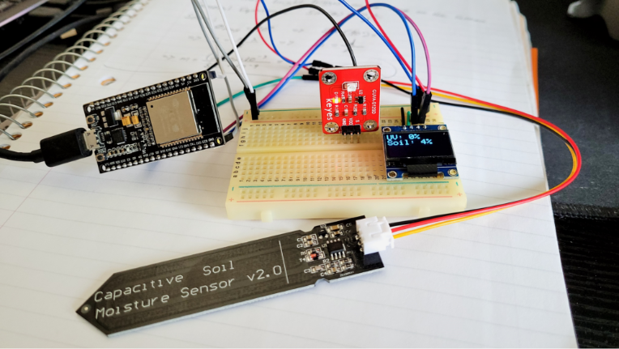
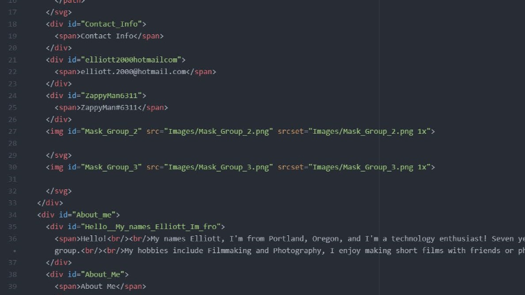

elliott.2000@hotmail.com
ZappyMan#6311


Contact Info
Projects


CatSpot
School Project - 2019
CatSpot was a final project for CS290 (Web Development) where OSU students could report cat sightings around campus. Users could report cat description, energy level, sociability, and last known location.
- Implemented MongoDB Atlas for database integration
- Utilized TomTom SDK for interactive map
- Used: HTML/CSS, JavaScript, Node.js
CatSpot was a final project for CS290 (Web Development) where OSU students could report cat sightings around campus. Users could report cat description, energy level, sociability, and last known location.
- Implemented MongoDB Atlas for database integration
- Utilized TomTom SDK for interactive map
- Used: HTML/CSS, JavaScript, Node.js
Plant Monitor
Personal Project - 2021
This project started when I wanted to gather useful data to determine the health of my basil plant. The system gathers soil moisture and UV data then displays it in real time online.
- Uses Arduino microcontroller with built-in WIFI to collect sensor data
- Implements HTTP post commands to update SQL database
- Charts.js to display sensor data
- Used: HTML/CSS, JavaScript, Node.js, C++

This project started when I wanted to gather useful data to determine the health of my basil plant. The system gathers soil moisture and UV data then displays it in real time online.
- Uses Arduino microcontroller with built-in WIFI to collect sensor data
- Implements HTTP post commands to update SQL database
- Charts.js to display sensor data
- Used: HTML/CSS, JavaScript, Node.js, C++
This Website!
Personal Project - 2020
I designed this website as an extension to my resume. A portfolio piece to show off who I am and the things I've done.
- Designed within Adobe XD
- Used: HTML/CSS, JavaScript, Node.js

I designed this website as an extension to my resume. A portfolio piece to show off who I am and the things I've done.
- Designed within Adobe XD
- Used: HTML/CSS, JavaScript, Node.js